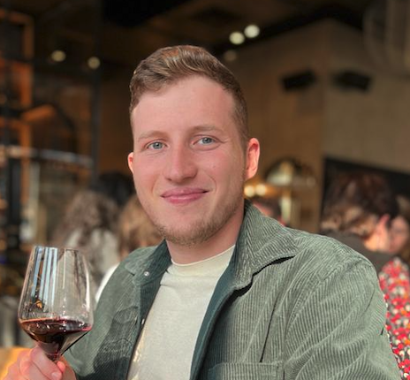

Daniel Glazman

Haifa, Israel
Phone: +972544717486
Email: glazman.daniel@gmail.com
LinkedIn: Daniel Glazman
Summary
I'm a recent Computer Science graduate from the University of Haifa, eager to begin my career as a junior software developer.
With experience in Java, C, C++, and Python, I'm ready to apply my skills and contribute to real-world projects.
I'm actively seeking opportunities to join a team where I can grow, learn, and make a meaningful impact.
Education
B.Sc. in Computer Science
University of Haifa, Graduated
2020 – 2024
Projects
- Participated in developing a full-stack project as part of the Software Engineering course.
Utilized technologies and frameworks including JavaFX for the UI, Java for business logic, MySQL for the database,
and GitHub for configuration management.
GitHub Link
- As part of the Deep Learning course, have developed a system utilizing LSTM networks to generate song lyrics conditioned by genre.
The project, written in Python, involved implementing deep learning algorithms and neural networks to successfully create diverse
and genre-specific musical compositions.
GitHub Link
- This "Mesh Model Viewer" project was developed using C++ and OpenGL.
The project used basic Computer Graphics concepts, including math principles, such as 2D and 3D transformations,
rendering techniques, and shading models.
GitHub Link
Skills
- C | C++ | Java | Python
- SickitLearn | PyTorch
- MySQL | ORM | UML
- Linux | Assembly
- Docker | Kubernetes